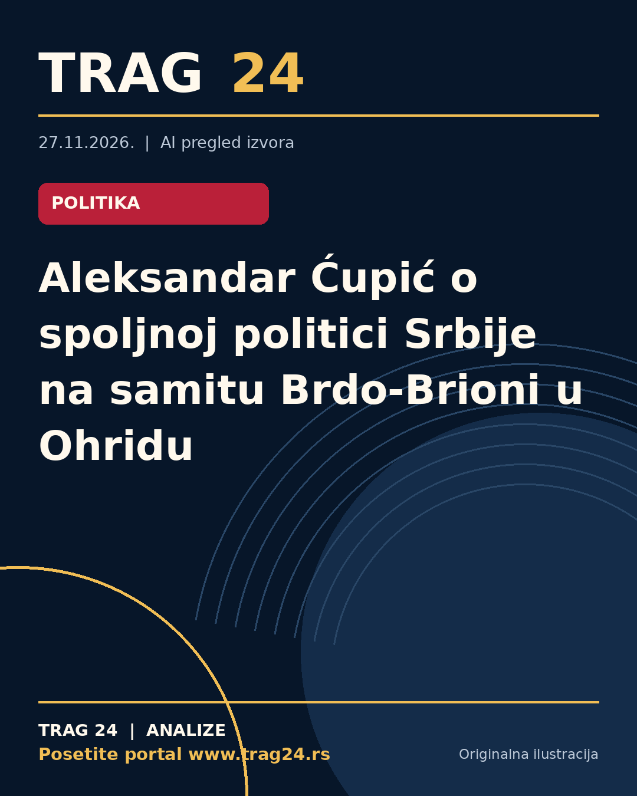

Aleksandar Ćupić o spoljnoj politici Srbije na samitu Brdo-Brioni u Ohridu

ŠTA SE DOGODILO
Aleksandar Ćupić, predsednik Narodne skupštine i vršilac dužnosti predsednika Srbije, učestvovao je na dvodnevnom samitu Procesa Brdo-Brioni koji se održava u Ohridu, Severna Makedonija. Na ovom skupu se sastao sa šefovima država iz regiona, a glavna tema događaja bila je evropska perspektiva zemalja Zapadnog Balkana.
HRONOLOGIJA
Tokom samita, Ćupić je u razgovoru sa medijima istakao ključne stavove o budućoj spoljnjoj politici Srbije. On je izrazio očekivanje da će se uskoro formirati nova Vlada Srbije, nakon čega će biti obnarodovan plan i program te vlade. Istakao je da kao vršilac dužnosti predsednika nema ovlašćenja da trenutno formuliše ili sprovodi državnu politiku, te da ne želi da u ovom trenutku daje detalje o spoljnopolitičkim smernicama.
ŠTA NAVODE IZVORI
Prema navodima iz medijskih izveštaja (Mondo, Nedeljnik, Nova.rs), Ćupić je naglasio da će spoljna politika Srbije biti uravnotežena, predvidljiva i dosledna. On je istakao važnost razumavanja dobronamernih ideja sadržanih u predloženom tekstu Deklaracije Procesa Brdo-Brioni, posebno ističući solidarnost i demokratiju kao ključne potrebe regiona. Takođe je naglasio obavezu prema građanima da se štite vitalni državni i nacionalni interesi i sačuva dostojanstvo u međunarodnim odnosima. Govorio je i o značaju saradnje među zemljama Zapadnog Balkana i planovima da se unaprede međusobni odnosi.
ŠTA JE POTVRĐENO
Potvrđeno je da Ćupić učestvuje na samitu Procesa Brdo-Brioni u Ohridu kao predstavnik Srbije i da je naglasio da će spoljnopolitički pristup Srbije biti uravnotežen, predvidiv i dosledan. Takođe je potvrđeno da on trenutno nema ovlašćenja da definiše spoljnu politiku i da se očekuje formiranje nove Vlade koja će te politike detaljnije predstaviti. Istaknuta je i njegova podrška inicijativama za uključivanje mladih u političke procese na zapadnobalkanskom području.
ŠTA NIJE POTVRĐENO
Nije potvrđeno koji konkretni spoljnopolitički koraci će Srbija preduzeti nakon formiranja nove Vlade niti su iznešene detaljne smernice o budućim odnosima Srbije sa pojedinačnim zemljama ili međunarodnim organizacijama. Takođe nije poznato koje konkretne promene u regionalnoj saradnji će uslediti na osnovu predloženih ideja iz Deklaracije Procesa Brdo-Brioni.
ŠTA OSTАJE OTVORENO: Ostaje nejasno kada će tačno biti formirana nova Vlada Srbije i kakav će biti njen konkretni spoljni i unutrašnji politički program. Takođe, ostaje otvoreno kako će se predložene ideje saradnje i uključivanja mladih u političke procese na Zapadnom Balkanu realizovati u praksi i kakav će efekat imati na stabilnost i prosperitet regiona.
Izvori
- https://mondo.rs/Info/Politika/a2317832/aleksandar-cupic-o-spoljnoj-politici-srbije.html
- https://www.nedeljnik.rs/cupic-na-samitu-brdo-brioni-spoljna-politika-srbije-bice-uravnotezena-predvidljiva-i-dosledna/
- https://nova.rs/vesti/politika/cupic-spoljna-politika-srbije-ce-biti-uravnotezena-predvidljiva-i-dosledna/
Ova analiza je pripremljena uz pomoć veštačke inteligencije na osnovu javno dostupnih izvora. Navodi izvora nisu nužno nezavisno potvrđeni.